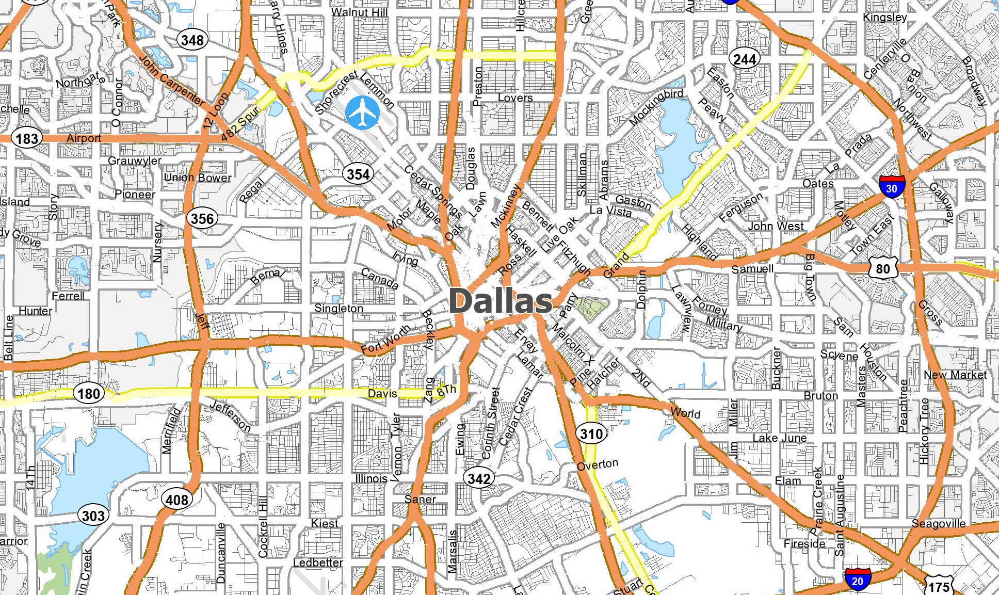
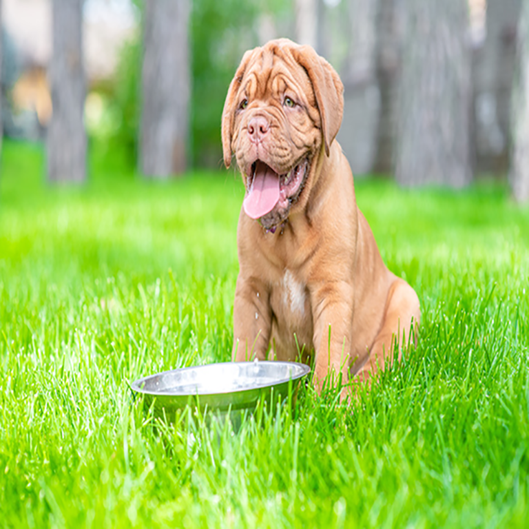

Home
Documentation
About Us
Puppies
When should I walk my dog?
Enter Location
Map

Documentation
How it works
Input uput your location
Our service will provide sunset and sunrise times per your location.
You can now use this information to schedule the best time of day to walk your dog.
Leave us a follow
@CoolPaws®
Why we do it
If a dog's body temperature rises past
104°
, he's in serious danger.
If the body temperature continues to rise above
106°
, heatstroke can occur.
Walking your dog in the morning or evening when it's cooler reduces the risk of heatstroke and burning their paws on the pavement.
That's why our team at
CoolPaws®
has developed an application to calculate the best time for you to walk your dog based on location and time of year.
